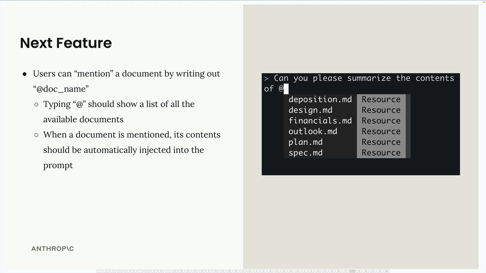
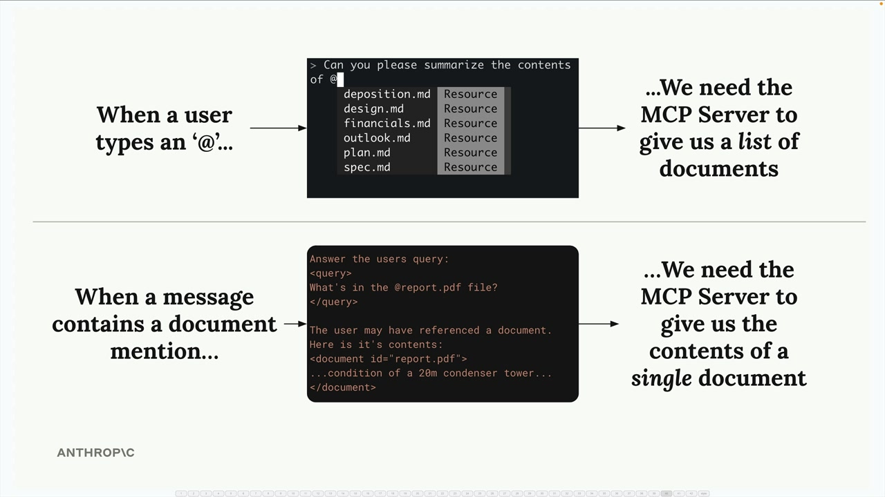
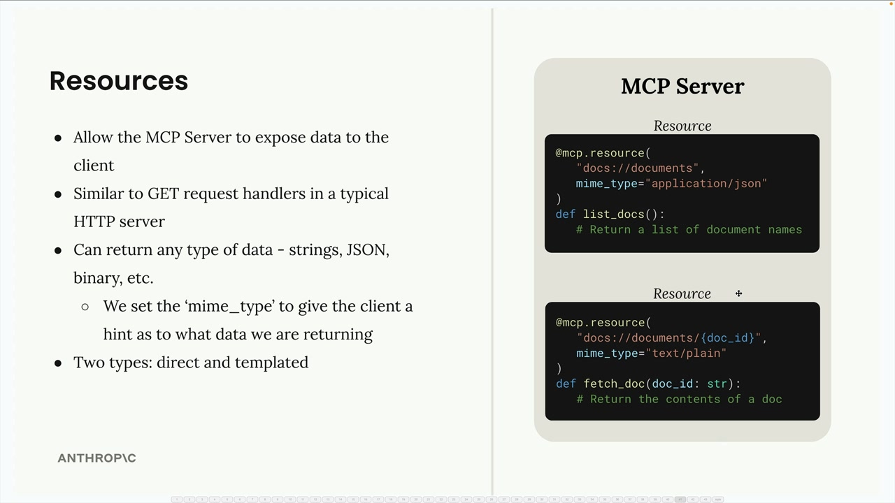
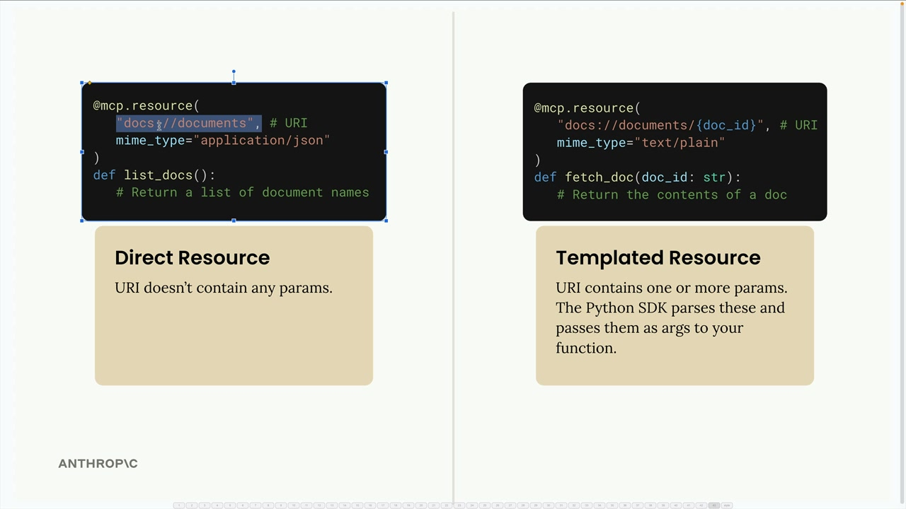
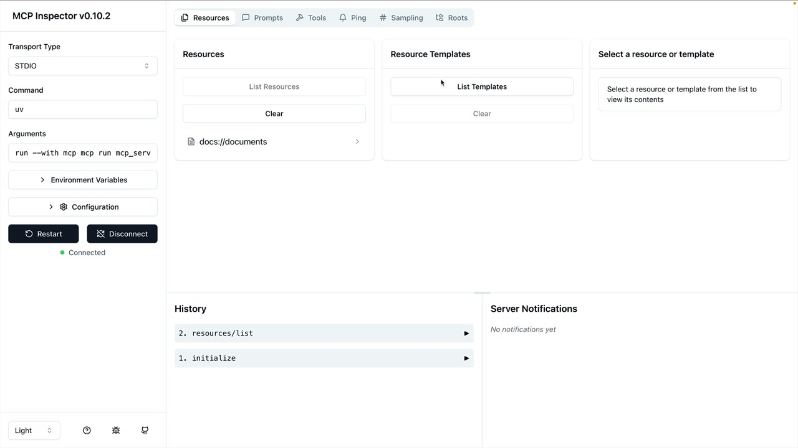
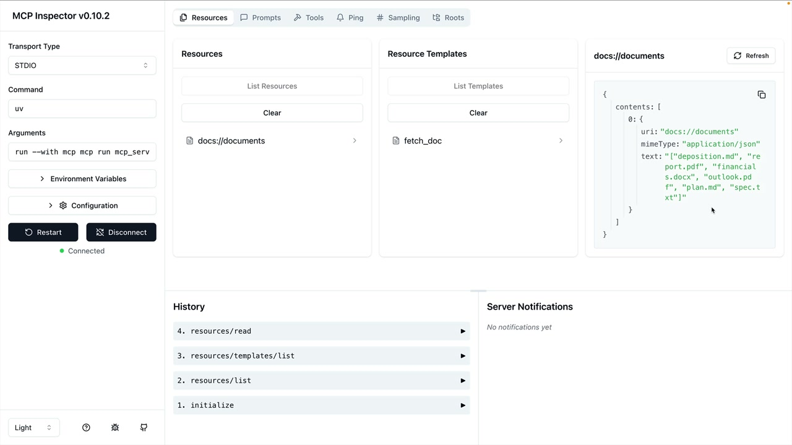

Ресурсы
Чему научитесь
Видео 9:45 и текст урока
К концу урока вы сможете:
- объяснить, чем ресурсы отличаются от инструментов;
- создавать прямые и шаблонные ресурсы декоратором
@mcp.resource; - задавать MIME-тип и проверять ресурсы в инспекторе.
Видео и текст урока.
Смотреть урок на Skilljar Defining resources · 9:45Ресурсы (resources) в MCP-серверах позволяют отдавать данные клиентам — похоже на обработчики GET-запросов в обычном HTTP-сервере. Они идеальны там, где нужно получить информацию, а не выполнить действие.
Ресурсы на примере
Допустим, вы хотите сделать упоминание документов: пользователь пишет @имя_документа, чтобы сослаться на файл. Для этого нужны две операции:
- получить список всех доступных документов (для автодополнения);
- получить содержимое конкретного документа (когда его упомянули).

Когда пользователь вводит @, нужно показать доступные документы. Когда он отправляет сообщение с упоминанием, вы автоматически подставляете содержимое документа в промпт, который уходит Claude.

report.pdf) в промпт.Как работают ресурсы
Ресурсы работают по схеме «запрос — ответ». Клиент отправляет ReadResourceRequest с URI, а MCP-сервер отвечает данными. URI служит адресом нужного ресурса.

list_docs и fetch_doc.Типы ресурсов
Ресурсы бывают двух типов:

{doc_id}).- прямые ресурсы (direct) — статические URI, которые не меняются, например
docs://documents; - шаблонные ресурсы (templated) — URI с параметрами, например
docs://documents/{doc_id}.
Для шаблонных ресурсов Python SDK автоматически разбирает параметры из URI и передаёт их в функцию как именованные аргументы.
Реализация ресурсов
Ресурсы описываются декоратором @mcp.resource(). Вот оба типа:
Прямой ресурс (список документов)
@mcp.resource(
"docs://documents",
mime_type="application/json"
)
def list_docs() -> list[str]:
return list(docs.keys())
Шаблонный ресурс (получение документа)
@mcp.resource(
"docs://documents/{doc_id}",
mime_type="text/plain"
)
def fetch_doc(doc_id: str) -> str:
if doc_id not in docs:
raise ValueError(f"Doc with id {doc_id} not found")
return docs[doc_id]
MIME-типы
Ресурсы могут возвращать данные любого типа — строки, JSON, двоичные данные и т. д. Параметр mime_type подсказывает клиенту, что за данные вы возвращаете:
application/json— структурированные данные JSON;text/plain— обычный текст;- любой другой корректный MIME-тип для других форматов.
Python MCP SDK автоматически сериализует возвращаемые значения. Вручную преобразовывать в строки JSON не нужно.
Проверка ресурсов
Ресурсы можно проверить в MCP Inspector. Запустите сервер:
uv run mcp dev mcp_server.py
Затем подключитесь к инспектору в браузере. Вы увидите:

docs://documents и раздел Resource Templates.- Resources — ваши прямые (статические) ресурсы;
- Resource Templates — шаблонные ресурсы с параметрами.
Нажмите на любой ресурс, чтобы проверить его и увидеть точную структуру ответа, которую получит клиент.

docs://documents возвращает JSON-список имён файлов.Главное
- ресурсы отдают данные, инструменты выполняют действия;
- прямые ресурсы — для статичных данных, шаблонные — для запросов с параметрами;
- MIME-типы помогают клиенту понять формат ответа;
- SDK сам сериализует данные;
- имена параметров в шаблонных URI становятся аргументами функции.
Ресурсы — чистый способ сделать данные доступными MCP-клиентам: упоминания документов, просмотр файлов и любые сценарии, где нужно получить информацию с сервера.
Дальше
Следующий урок — чтение ресурсов на стороне клиента.
Оригинал урока: Defining resources.